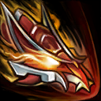

核心裝備
 三相之力
三相之力 殞落王者之劍
殞落王者之劍 死亡之舞
死亡之舞 智慧末刃
智慧末刃 守護天使
守護天使
以下為本站 7.2d 校正後的標準配置；實戰仍需依敵方陣容調整。


技能優先：E > Q > W
擊殺大型野怪、史詩級野怪與英雄會獲得堆層，擊殺飛龍提供更多；每達 100 層會依序強化一項技能。

下一次普攻快速攻擊兩次並附帶命中效果；龍型態會對前方範圍攻擊並附加緩速。
在周圍形成火焰並提高跑速，持續對附近敵人造成魔法傷害；普攻可延長效果。
發射火球造成傷害並標記目標，普攻標記目標會造成最大生命比例額外傷害；龍型態會在地面留下燃燒區域。
被動透過普攻累積怒氣；滿怒後躍向指定方向變成巨龍，造成傷害並將路徑上的敵人聚向落點。
3技標記 → 2技加速 → 普攻 → 1技雙擊 → 持續普攻
先用三技掛上標記，再靠一技雙擊快速觸發最大生命比例傷害。
4技變身 → 龍型3技 → 2技貼身 → 龍型1技 → 普攻
大絕進場後先放三技建立燃燒區，再以二技黏住並用一技範圍雙擊。
3技標記 → 1技雙擊 → 普攻 → 重擊收尾
一技雙擊能快速觸發標記傷害，接近斬殺線時與重擊同步施放。
五級前以完整清野、疊加龍裔之怒與控河蟹為主，避免和強勢打野硬碰。三技標記野怪後持續普攻，搭配一技雙重打擊能快速觸發額外傷害。
怒氣滿後才能使用大絕，物件刷新前要先打野或普攻累積。大絕越牆進場後先用龍型三技建立燃燒區，再用二技加速貼身與一技輸出。
擁有多次技能強化後可擔任前排鬥士，但仍要避免脫離隊伍單獨衝入。優先圍繞飛龍與遠古物件作戰，利用高持續傷害快速處理前排。
對局名單是本站依英雄機制與目前配置整理的參考，不等同固定勝率。
打野先維持標準刷野與節奏裝，只有敵方陣容或我方前排需求明顯時才調整。
觸發：敵方前排多，物件團與正面團戰會長時間卡在高生命目標上。
標準配置已經具備足夠打坦能力，維持核心即可。
觸發：敵方能在你進場或搶物件前快速把你秒掉。
魔提斯深淵提供魔防與低血量魔法護盾，比單純增加輸出更能保住進場或持續輸出。
觸發：進場或搶物件時經常被控制鏈直接中斷節奏。
先購買水銀飾帶取得主動解控，之後再合成水星彎刀；水銀飾帶是合成組件，不是另一件要與水星彎刀互換的成裝。
犧牲部分輸出型傳奇符文，換取韌性與緩速抗性。
觸發：敵方前排、鬥士或吸血核心能在物件團長時間回復。
生化龐克鏈鋸之劍提供物攻、生命與技能加速，適合近戰物理角色補重創。
觸發：我方陣容沒有可靠第一承傷點，團戰需要有人更早進場吸收注意力。
若標準配置已經有半坦容錯，就不必再犧牲核心傷害。
提醒：「缺前排」不代表所有打野都要改坦裝；刺客、法師與射手打野硬轉坦通常會失去英雄價值。
7.2a 打野正式版：技能名稱依 Riot Games 台灣《激鬥峽谷》希瓦娜英雄頁校正；三相之力、殞落王者之劍與技能順序交叉參考 WildRiftFire 7.2a。Tier 與對局為本站綜合評級。｜v54：完成打野第三批正式版，完整套用李星固定母版，補齊起手裝、核心三件、五件成裝、技能加點、三組連招、對局與前中後期節奏。
本站於 2026-08-27 依 Patch 7.2d 重新檢查此配置。 Tier、出裝、符文與對局屬於 Wild Rift Guide 的整理與分析，不是 Riot Games 官方推薦；版本改動後會再依官方公告與實戰資料校正。